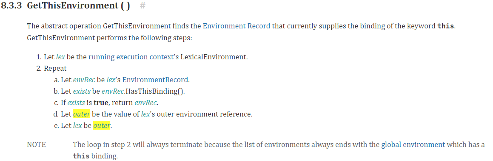
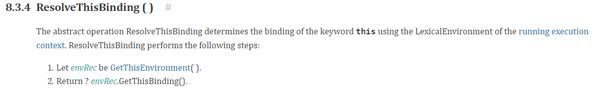
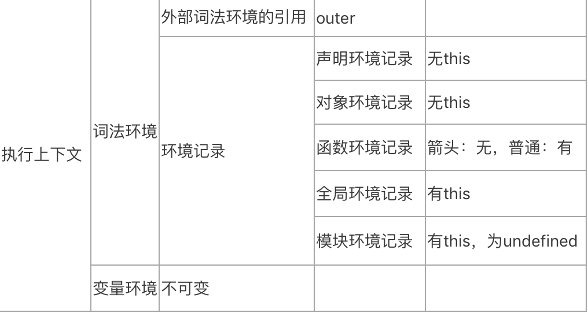
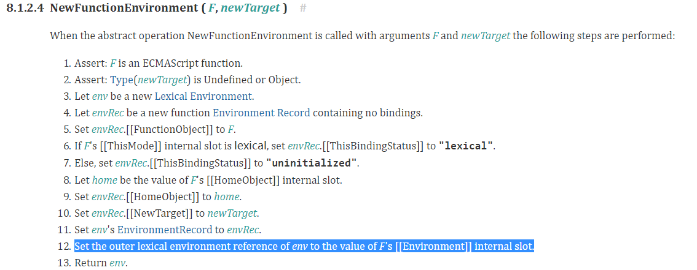
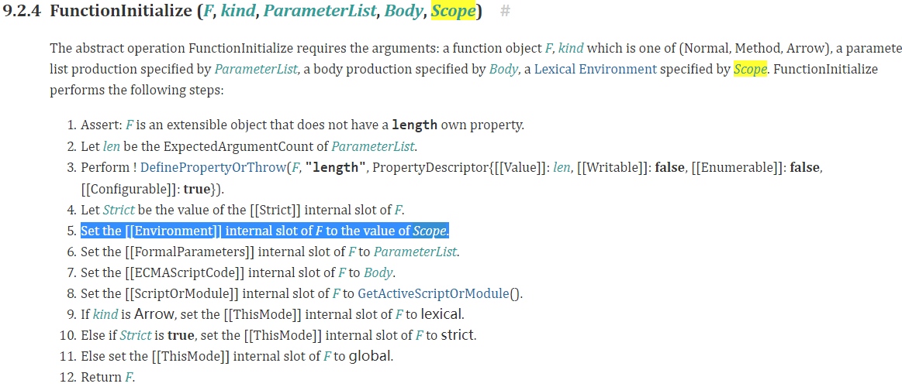
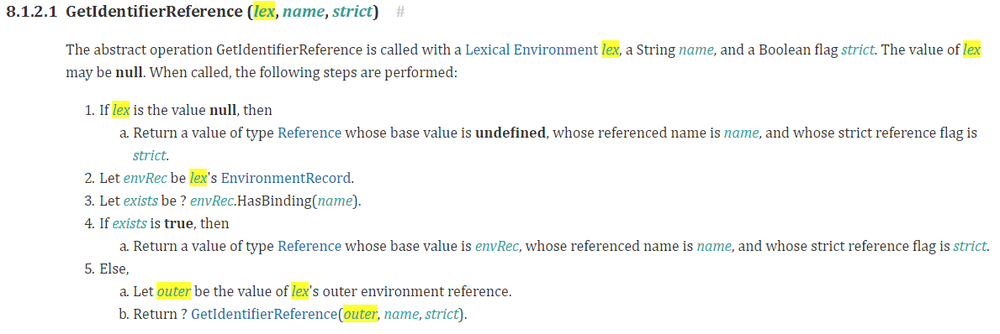

平常面试，总是会遇到this、闭包、作用域相关的问题。要捋清楚这些问题，就必须理解执行上下文以及词法作用域。ECMAScript2016的第八章是专门讲执行上下文这个问题的，我的上一篇文章ECMAScript2016规范理解(1)-this中对于this的理解，需要对执行上下文和词法环境有一定的了解，所以在此补上
执行上下文
规范中对于执行上下文的描述是在8.3中，规范的说明是执行上下文是ECMAScript实现的一种用来追踪代码运行的机制。执行上下文会在当JavaScript引擎从当前执行上下文所关联的代码进入另一段和当前上下文不关联的可执行代码的时候，就会创建一个可执行上下文（Execution Context）。任何时刻都只能有一个执行上下文，把其称为运行时执行上下文（running execution context.）。
引擎会有一个叫执行上下文栈的东西来管理执行上下文的切换，栈顶的执行上下文永远是运行时执行上下文。当从执行上下文A进入另一个执行上下文B时，会把B推入栈中，称为栈顶元素，也就是运行时执行上下文，当B执行完，会从栈中推出，从而使引擎回到A的执行上下文。如下代码1
2
3
4
5
6var a = 1; // A
function b () {
console.log(b); // B
}
b();
var c = 1 // A
当前执行上下文会从A -> B -> A
执行上下文的组成
规范中规定执行上下文是包含任何可追踪代码状态的组件。其中词法环境（LexicalEnvironment）和变量环境（VariableEnvironment）是其非常重要的两个部分。在初始化执行上下文的时候，词法环境和变量环境的值是一样的，都是词法环境（Lexical Environments）他们的唯一区别就是变量环境是不会变化的，而词法环境有可能会在代码执行的时候被改变。一个执行上下文会有很多抽象操作，我就介绍两个在ECMAScript2016规范理解(1)-this中提到的方法

GetThisEnvironment这个方法翻译下来就是会从当前执行上下文开始，通过outer不断递归找有this绑定的词法环境，这个操作一定会找到，因为所有词法环境的最外层词法环境都是全局词法环境，它是有this绑定的。

ResolveThisBinding 这个方法就是在执行this表达式的时候会使用，返回当前词法环境中this绑定的值。
词法环境
规范规定，词法环境是一个用于定义标识符和特定变量和函数在 ECMAScript 代码的词法嵌套结构上关联关系的规范类型。一个词法环境包括一个环境记录项和可能为null的外部词法环境的引用。
环境记录项
环境记录项一共有5种: 声明式、对象式、函数式、模块式、全局。他们各有不同，如下图

HasThisBinding()函数返回为true的说明该环境记录是有this绑定的，那它就会实现一个GetThisBinding方法，从而返回其this值。
外部词法环境的引用
这个定义其实就解释了作用域链，因为每个词法环境在初始化的时候，就会给其outer初始化一个值，从而在变量查找的时候，当前环境记录项中没有时，就可以从outer得到当前词法环境的父环境，从而如事件冒泡一样，不断往上查找，直到全局词法环境，因为全局词法环境的外部引用是null。
作用域链
作用域就是一套变量的查找规则，或者说是可访问变量的集合。也就是说作用域定义了一个变量可访问的范围，超出这个范围，那变量将不可被访问。JavaScript的作用域是静态作用域，也就是说变量可被访问的范围在变量被定义的时候就确定了。
词法环境初始化
当建立执行上下文时，作为执行上下文的一部分，词法环境当然也会被创建并且初始化。就拿函数词法环境的创建为例说明：

倒数第二步很关键，把F.[[Environment]]设为改词法环境env的外部引用（outer lexical environment reference of env）。那F.[[Environment]]是什么值？肯定也是词法环境，就看是在哪初始化的了。是函数的内部属性，那很有可能就是在函数初始化的时候。在规范中查找可得到如下图所示：

在这个函数中，是把Scoped参数赋给[[Environment]]了，通过追溯规范中FunctionInitialize函数的调用过程，可以找到，Scoped的值为当前执行上下文的词法环境。
变量的查找规则
在规范中，规定的词法环境的操作中，除了有5种词法环境记录的创建外，还定义了词法环境对变量的查找规则，如下图所示：

就是首先在当前词法环境的环境记录中找，没有的话就从当前词法环境的外部引用outer中找。从此就理清楚作用域这个问题了，因为在初始化的时候，每个词法环境有对外部词法环境的引用outer，并且变量查找在本词法环境没找到时，会从outer中查找，不断递归这个过程。
闭包
其实理清楚了上面的问题，也就能明白闭包了。举一个经典闭包说明：1
2
3
4
5
6
7
8
9function a () {
var tag = 1;
return function () {
console.log(tag++)
}
}
var b = a();
b(); // 1
b(); // 2
先设定函数a的词法环境为EnvA，设匿名函数为n，匿名函数n的词法环境为EnvC。在声明return语句返回的那个n时，n的[[Environment]]会被设为EnvA。执行n的时候，会创建n的词法环境EnvC，其outer为n.[[Environment]]。也就是EnvA。所以，执行b()的时候，在EnvC中并没有tag变量，但是从outer也就是EnvA中找到了。